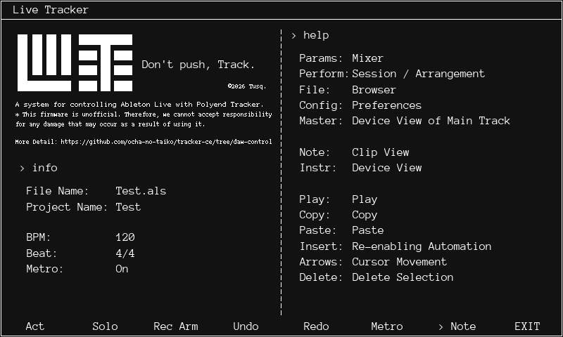

初代 Polyend Tracker のボタン・パッド・ジョグホイールで、Ableton Live の再生・録音・クリップ起動・ビュー切り替えなどを操作するための改造です。Push のような使い方を目指しています。Tracker と Mac は USB 1 本でつなぎ、USB MIDI でやり取りします。
mapping.json で割り当てを決めるcore/interface/dawControl/）：ボタンを押したら決まった CC を送るだけです。どのボタンで何をするかは知りません。ただし「画面を閉じる」「Session／Note の切り替え」「Note モードのオクターブ」は Tracker の中で処理します。ableton/PolyendTrackerDAW/）：届いた CC を mapping.json に従って Live の操作に変えます。割り当ての変更は Live 側だけで済み、ファームの書き直しは要りません。/DawControl.json、Live 側は mapping.json です。| ファイル | 置き場所 | 内容 |
|---|---|---|
| PolyendTracker_DAW_1.2.0.ptf | /Firmware/ | 改造ファーム。Config > Firmware > Firmware update で書き込む |
| LiveTracker.ptfont | /（一番上） | DAW Control 画面専用のフォント（Anonymous Pro）。画面を開いている間だけ使う |
| DawControl.json | /（一番上） | Tracker 側の設定（MIDI 番号、Note モード、ラベル、画面の文言と色）。無くても既定値で動く |
| Fonts/AnonymousPro.ptfont | /Fonts/ | 任意。Tracker 全体の文字を Anonymous Pro にするとき、Config > General > Display font で選ぶ |
画面下のラベルは DawControl.json が優先されます。古い JSON が残っていると、ファームを新しくしてもラベルは古いままです。起動しなくなったときは、/Firmware/ に公式の .ptf だけを入れて電源を入れ、底面のリセット穴を押すと戻せます（公式 README の Emergency Recovery）。
sh ableton/install.sh # 通常 RESET_MAPPING=1 sh ableton/install.sh # 編集した mapping.json も既定値に戻す
~/Music/Ableton/User Library/Remote Scripts/PolyendTrackerDAW/mapping.default.json はいつも同梱の既定値で上書きします。mapping.json は、前回の既定値から編集されていれば残し、編集されていなければ新しい既定値に置き換えます。PolyendTrackerDAW、入力・出力とも Tracker。MIDI ポートの入力 Tracker の「トラック」をオン（Note モードの演奏をトラックに届けるため）。(not saved)）や BPM が出れば接続済み。Waiting for Live... のままなら Live の Control Surface の設定を見直す。| モード | パッド | 切り替え |
|---|---|---|
| Session | 赤枠（12 トラック × 4 シーン）内のクリップを起動。LED はクリップの状態 | 画面下ボタン 7。ラベルは切り替え先（Session 中は「> Note」、Note 中は「> Session」） |
| Note | 鍵盤として演奏（MIDI ch1）。Up／Down でオクターブ上下 |
Live 側の mapping.json の既定値です。「Shift」は Tracker の Shift を押しながらの操作です。
| Tracker の操作 | Live の動作 | mapping.json の動作名 |
|---|---|---|
| Play | 再生／停止（Shift：続きから再生） | play_toggle / continue |
| Rec | Arrangement 録音（Shift：Session 録音） | arrangement_record / session_record |
| Params | ミキサーの表示／非表示 ※1 | toggle_mixer |
| Performance | Session／Arrangement ビューの切り替え（Tab キーと同じ） | toggle_session_arrangement |
| File | ブラウザの表示／非表示 | toggle_browser |
| Config | 設定ウィンドウを開く ※1 | open_settings |
| Master | Main トラックのデバイスビューを開く／閉じる（閉じると元のトラックに戻る） | toggle_main_devices |
| Note | 選択中のクリップのクリップビューを開く／閉じる | toggle_clip_view |
| Instr | 選択中のトラックのデバイスビューを開く／閉じる | toggle_device_view |
| Vol（FX1）／Fx（FX2） | 選択中のトラックのデバイスを左／右に選ぶ | device_prev / device_next |
| Copy | コピー（Shift：ペースト）※1 | copy / paste |
| Insert | オートメーションを再有効化（Shift：Home キー）※2 | re_enable_automation / home |
| Delete | 選択範囲を削除 ※1 | delete |
| 矢印 | カーソル移動（矢印キーと同じ）※1 | cursor_up など |
| Shift + 矢印 | 範囲選択（Shift + 矢印キーと同じ）※1 | select_up など |
| Pattern | 元に戻す（Shift：やり直し） | undo / redo |
| Song | タップテンポ | tap_tempo |
| ジョグホイール | 右で拡大、左で縮小（Arrangement の時間軸）。Shift でテンポ ±1 | jog: zoom / tempo |
| 画面下 1（Act） | 選択中のトラックのオン／オフ（トラックアクティベーター） | track_activator |
| 画面下 2（Solo） | 選択中のトラックのソロ | solo_selected_track |
| 画面下 3（Rec Arm） | 選択中のトラックの録音アーム | arm_selected_track |
| 画面下 4（Undo） | 元に戻す（Shift：やり直し） | undo / redo |
| 画面下 5（Redo） | やり直し | redo |
| 画面下 6（Metro） | メトロノーム（Shift：タップテンポ） | metronome / tap_tempo |
| 画面下 7 | Session／Note モード切り替え（Tracker 側で処理） | DawControl.json: mode |
| 画面下 8（EXIT） Shift + Config | DAW Control 画面を閉じる（Tracker 側で処理） | DawControl.json: exit |
| Up／Down（Note 中） | オクターブ上下（Tracker 側で処理。カーソル移動にはならない） | octaveUp / octaveDown |
※1 Live の API に無い操作なので、Mac のキーボードショートカットとして送ります（09 章）。※2 Home キーは、Arrangement では挿入マーカーを先頭へ、Session では先頭のトラックへ移動します。赤枠は選択中のトラック・シーンについていきます（ringFollowsSelection: true）。
48 個のパッド（12 × 4）が赤枠内のクリップに対応し、ch16 のノート 36〜83 を送ります。LED は Live から同じ番号のノートで届き、ベロシティが LED の値です。Tracker のパッドは単色なので、クリップの色は出ません。
| クリップの状態 | ledValues | 値 |
|---|---|---|
| 空 | — | 0（消灯） |
| 停止中 | stopped | 6 |
| 再生中 | playing | 31 |
| 再生待ち | triggered | 63（点滅） |
| 録音中 | recording | 52（点滅） |
| 録音待ち | triggeredToRecord | 42（点滅） |
| アーム中の空き | armedEmpty | 2 |
値の意味：0＝消灯、1〜31＝点灯（明るさ）、33〜63＝点滅（明るさは値 − 32）。
パッドを鍵盤にして、ch1 のノートを送ります（DawControl.json の noteMode）。
| 項目 | 既定値 |
|---|---|
| root | 36（左下のパッドの音） |
| rowOffset | 12（1 段上がると 1 オクターブ上） |
| scale | [0, 2, 4, 5, 7, 9, 11]（メジャー） |
| velocity | 100 |
| ledRoot | 20（ルート音のパッド） |
| ledInScale | 4（スケール内のパッド） |
| ledPressed | 31（押している間） |
初代 Tracker のパッドはベロシティを送らないので、強さは固定です。
| # | 部分 | 内容 | 出どころ |
|---|---|---|---|
| 1 | タイトル | 「Live Tracker」と、その下の横線。画面のふちに外枠 | screen.title |
| 2 | ロゴ・コピー | ドット絵のロゴ、「Don't push, Track.」、「©2026 Tusq.」 | tagline / credit |
| 3 | 説明文 | 説明、注意書き（2 行に折り返し）、詳細のリンク | description / disclaimer / moreDetail |
| 4 | > info | File Name、Project Name、BPM、Beat、Metro | Live から（08 章） |
| 5 | 区切り線 | x = 399 の縦の点線（6 px 描いて 4 px 空ける） | 固定 |
| 6 | > help | ボタンの割り当ての一覧（最大 16 行） | mapping.json の help |
| 7 | 下のラベル | 画面下ボタン 8 個のラベル。各ボタンの真上（x = 50 + 100 × i）に中央揃え | labels |
| 行 | 表示 |
|---|---|
| File Name | 未接続：Waiting for Live...／Live Set が未保存：(not saved)／保存済み：ファイル名（例：MySong.als）。枠に入らない長さは末尾を「...」で省略 |
| Project Name | Set が入っているプロジェクトのフォルダ名（末尾の「 Project」は外す） |
| BPM | 小数点以下が 0 なら整数（120）、それ以外は 1 桁（120.5） |
| Beat | 拍子（4/4 など） |
| Metro | メトロノームのオン／オフ（On／Off） |
ファイル名は 1 秒ごとに確かめ、変わったときだけ送ります。未接続の間は BPM 以下も空欄です。
文字は Anonymous Pro（SIL Open Font License）です。画面を開くと SD カードの /LiveTracker.ptfont を読み込み、閉じると Config で選んでいるフォントに戻します。ファイルが無いときは、いつものフォントで表示します（文字幅が合わないので長い文は途中で切れます）。
| 用途 | 大きさ | 1 文字のセル | 使う場所 |
|---|---|---|---|
| 本文 | 9 px | 9 × 17 | info・help の中身、下のラベル |
| 本文（太字） | 9 px | 9 × 19 | タイトル、見出し（> info、> help） |
| 小 | 6 px | 6 × 11 | 説明文 |
| 小（太字） | 6 px | 6 × 11 | キャッチコピーなど |
| 極小 | 5 px | 5 × 10 | 注意書き、詳細のリンク |
出せる文字は ASCII（32〜126）と ©（セル 127 に入れてある）だけです。日本語などは「?」になります。極小の 5 px は、これより小さいと読めなくなるための下限です。
| 要素 | 位置 | 要素 | 位置 |
|---|---|---|---|
| タイトル | (19, 13)、線 y=27 | info 見出し | (28, 238) |
| ロゴ | (25, 49)〜(188, 130) | info ラベル／値 | x=38 ／ x=165〜392 |
| キャッチコピー | (202, 91) | info の行 | y=271, 294, 337, 360, 382 |
| クレジット | 右端 379, y=123 | help 見出し | (414, 49) |
| 説明文 | x=22, y=148 | help ボタン／説明 | x=426 ／ x=501〜790 |
| 注意書き | x=22, y=163（行送り 14） | help の行 | y = 82 + 22.3 × 行 |
| 詳細のリンク | x=22, y=202 | 下のラベル | 中心 x=50+100i, y=464 |
位置と大きさは core/interface/dawControl/dawScreen.cpp の定数で固定です。画面は「背景・info・help・ラベル」の 4 部分に分かれていて、変わった部分だけを描き直します。
インストール先の Remote Scripts/PolyendTrackerDAW/mapping.json を編集し、Live の Control Surface をいったん「なし」にしてから選び直すと反映されます。
"buttons": {
"Play": { "press": "play_toggle", "shift": "continue" }
},
"jog": { "default": "zoom", "shift": "tempo" },
"help": [ ["Params", "Mixer"], [], ["Play", "Play"] ]
| キー | 内容 |
|---|---|
| buttons | ボタン名ごとに press（押したとき）と shift（Shift を押しながら）の動作。ボタン名：Screen1〜Screen8、Params、Performance、File、Config、Master、SampleLoad、SamplePlay、SampleEdit、SampleRec、Song、Note、Instr、Vol、Fx、Pattern、Play、Copy、Insert、Up、Delete、Rec、Shift、Left、Down、Right |
| jog | zoom、scene_select、track_select、tempo のどれか |
| ledValues | クリップの状態ごとの LED の値（05 章） |
| ringFollowsSelection | 赤枠を選択中のトラック・シーンに合わせて動かすか |
| help | 画面の「> help」。["ボタン", "説明"] を上から並べる。[] は空行。最大 16 行、ボタンは 11 文字・説明は 39 文字まで（「:」は画面側で付ける）。割り当てを変えたらここも直す |
| channel ほか | MIDI チャンネルと CC 番号。DawControl.json 側とそろえる |
使える動作：toggle_mixer, automation_mode, toggle_session_arrangement, toggle_browser, open_settings, toggle_main_devices, toggle_clip_view, toggle_device_view, device_prev, device_next, copy, paste, delete, home, cursor_up/down/left/right, select_up/down/left/right, re_enable_automation, track_activator, solo_selected_track, play_toggle, continue, stop, arrangement_record, session_record, overdub, metronome, tap_tempo, tempo_up, tempo_down, undo, redo, capture_midi, stop_all_clips, stop_selected_track, arm_selected_track, track_prev, track_next, scene_prev, scene_next, ring_left, ring_right, ring_up, ring_down, ring_page_left, ring_page_right, ring_page_up, ring_page_down, scene_launch_1〜4, key:<ショートカット>
key:cmd+shift+c のように書くと任意のショートカットを送れます。修飾キーは cmd・shift・alt（option）・ctrl。
DAW Control 画面を開くたびに読み直します。見本は sd-card/DawControl.json です。
| キー | 内容（既定値） |
|---|---|
| controlChannel | ボタン・LED・状態に使うチャンネル（16） |
| noteChannel | Note モードの演奏のチャンネル（1） |
| buttonCcBase ほか | buttonCcBase 20、jogCc 70、helloCc 119、padNoteBase 36、padVelocity 127 |
| feedback | Live から届く CC の番号（08 章） |
| noteMode | Note モードの音域・スケール・LED（05 章） |
| localButtons | Tracker の中で処理するボタン：exit = Screen8、mode = Screen7、octaveUp = Up、octaveDown = Down。名前か番号で書く。null で無効 |
| labels | 画面下のラベル 8 個：Act, Solo, Rec Arm, Undo, Redo, Metro, ""（モード表示）, EXIT |
| screen | 画面の文言・色・フォント（下の表） |
| screen のキー | 既定値 |
|---|---|
| font | /LiveTracker.ptfont（"" でいつものフォント） |
| title / tagline / credit | Live Tracker ／ Don't push, Track. ／ ©2026 Tusq. |
| description | A system for controlling Ableton Live with Polyend Tracker. |
| disclaimer | * This firmware is unofficial. Therefore, we cannot accept responsibility for any damage that may occur as a result of using it. |
| moreDetail | More Detail: https://github.com/ocha-no-taiko/tracker-ce/tree/daw-control |
| infoTitle / helpTitle | > info ／ > help |
| infoLabels | File Name:, Project Name:, BPM:, Beat:, Metro: |
| waiting / notSaved | Waiting for Live... ／ (not saved) |
| metroOn / metroOff | On ／ Off |
| colors | background #121212、text #FFFFFF、subText #FFFFFF、line #FFFFFF（"#RRGGBB"） |
文言は UTF-8 で書きます。© はそのまま「©」と書きます（© の書き方は読めません）。
USB MIDI のポートは 1 つなので、チャンネルで役割を分けています（既定値）。
| 向き | 内容 | メッセージ |
|---|---|---|
| Tracker → Live | ボタン（ID 0〜43） | ch16 CC（20 + ID）。押す 127 ／離す 0 |
| Tracker → Live | パッド（Session） | ch16 ノート 36〜83 |
| Tracker → Live | パッド（Note） | ch1 ノート |
| Tracker → Live | ジョグ | ch16 CC70。64 + 変化量 |
| 双方向 | 接続の合図 | ch16 CC119。127 ＝開いた ／ 0 ＝閉じた。受け取った Live は状態をすべて送り直す |
| Live → Tracker | パッド LED | ch16 ノート 36〜83。ベロシティ ＝ LED の値 |
| Live → Tracker | 状態 | ch16 CC100〜104（再生、Arrangement 録音、Session 録音、オーバーダブ、メトロノーム） |
| Live → Tracker | テンポ | ch16 CC110 ／ 111（テンポ × 10 の上位 7 ビット ／ 下位 7 ビット） |
| Live → Tracker | 赤枠と選択 | ch16 CC112（トラック位置）、CC113（シーン位置）、CC114（選択トラック） |
| Live → Tracker | 拍子 | ch16 CC115（分子）、CC116（分母） |
| Live → Tracker | 画面の文字 | SysEx（下） |
F0 7D 50 54 <種類> <番号> <ASCII の文字列> F7
"P" "T"
| 種類 | 内容 | 番号と文字列 |
|---|---|---|
| 1 | ファイル名 | 番号 0。空文字列 ＝ 未保存 |
| 2 | プロジェクト名 | 番号 0 |
| 3 | help の行 | 番号 ＝ 行（0〜15）。ボタン<TAB>説明、空文字列は空行。番号 0 を受け取ると一覧を作り直す |
7D は非商用向けのメーカー ID です。F0 7D 50 54 で始まらない SysEx は捨てます。コピー・ペースト・削除・矢印・範囲選択・設定・ミキサーは Live の API に操作が無いため、同梱の keysender.js（osascript の JXA）が Mac のキー入力として Live に送ります。Live のウィンドウからファイル名を読むのも、このスクリプトです。
Remote Scripts/PolyendTrackerDAW/keysender.log に残ります（許可の有無もここに出ます）。GNU Arm Embedded Toolchain 10.3-2021.10 が必要です（公式 README と同じ）。
make original NPROC=$(sysctl -n hw.ncpu) ORIGINAL_POSTFIX=DAW_1.2.0 # → build/PolyendTracker_DAW_1.2.0.ptf
uv run --with pillow tools/fonts/make_ptfont.py --layout daw \
tools/fonts/AnonymousPro/AnonymousPro-Regular.ttf \
tools/fonts/AnonymousPro/AnonymousPro-Bold.ttf \
sd-card/LiveTracker.ptfont --preview preview.png
--layout daw を外すと、Tracker 全体で使うフォント（sd-card/Fonts/AnonymousPro.ptfont）になります。
| コマンド | 内容 |
|---|---|
| sh tests/dawControl/run.sh | ファームの JSON 読み込み（Mac で実行） |
| sh tests/dawControl/preview.sh out.png | 画面の描画を Mac 上で画像にする（PREVIEW_NAMES=long で長い名前の省略を確認） |
| python3 ableton/tools/test_script_offline.py | Remote Script の動作（Live 不要） |
| python3 ableton/tools/fake_tracker.py selftest 300 | Tracker のふりをして Live と実際に通信 |
| 場所 | 内容 |
|---|---|
| core/interface/dawControl/ | DAW Control 画面（fDawControl：入出力、gDawControl：表示、dawScreen：描画、dawControlConfig：JSON 読み込み） |
| core/source/mtMidi.cpp | USB の SysEx を DAW Control に渡す |
| platforms/mk66/source/UsbMidiImpl.cpp | SysEx の受け取り（初代 Tracker） |
| ableton/PolyendTrackerDAW/ | Remote Script（PolyendTrackerDAW.py、mapping.json、keysender.js） |
| ableton/install.sh | Live へのインストール |
| sd-card/ | SD カードに入れる DawControl.json、LiveTracker.ptfont、Fonts/ |
| tools/fonts/ | フォントの変換ツールと Anonymous Pro（OFL.txt） |
| tests/dawControl/ | JSON 読み込みのテスト、画面のプレビュー |
| DAW_CONTROL.md | 説明書（この仕様書の元） |
| docs/live_tracker_spec/ | この仕様書（spec.html → spec.pdf） |
"/Applications/Google Chrome.app/Contents/MacOS/Google Chrome" --headless \
--no-pdf-header-footer --print-to-pdf=docs/live_tracker_spec/LiveTracker_spec.pdf \
docs/live_tracker_spec/spec.html